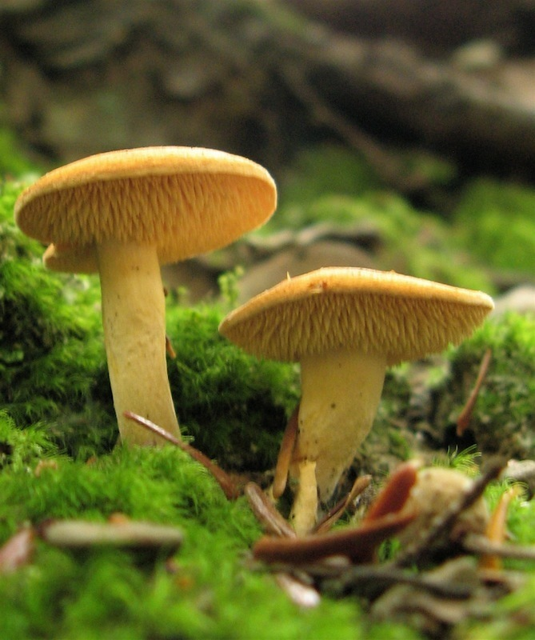
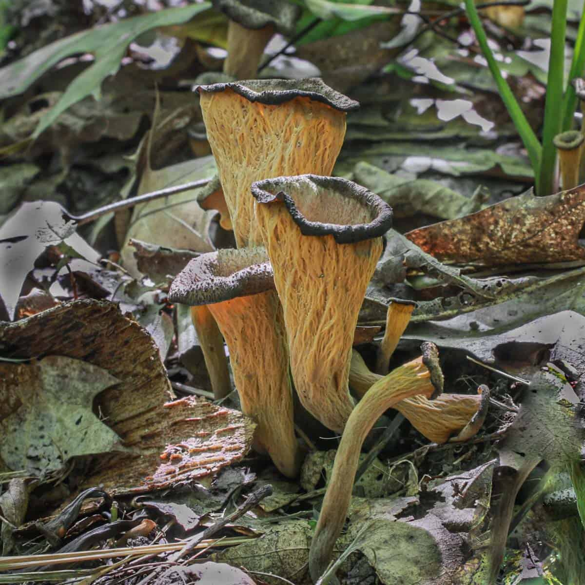
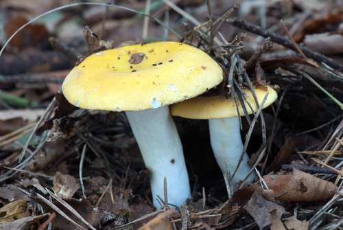

DEPRESSED HEDGEHOG, Hydnum Umbilicatum
Hydnum umbilicatum, commonly known as the depressed hedgehog, is a species of tooth fungus in the family
Hydnaceae. It was scientifically described in 1902 by American mycologist Charles Horton Peck. It is found in
eastern North America, where it grows on boggy soil under conifer trees. Edibility: Edible, tastes terrible.

JELLY EAR, Auricularia Judae
Auricularia auricula-judae, which has the recommended English name jelly ear, also known as Judas's ear or
Jew's ear, is a species of fungus in the order Auriculariales. Basidiocarps are brown, gelatinous, and have a
noticeably ear-like shape. They grow on wood, especially elder.

BLACK TRUMPET, Craterellus Cornucopioides
Craterellus cornucopioides, or horn of plenty, is an edible mushroom. It is also known as the black
chanterelle, black trumpet, trompette de la mort, trombetta dei morti or trumpet of the dead.

YELLOW BRITTLEGILL, Russula Claroflava
Russula claroflava, commonly known as the yellow swamp russula or yellow swamp brittlegill, is a
basidiomycete mushroom of the genus Russula. It is found in wet places under birch and aspen woodlands across
Europe and North America. It has a yellow cap, white gills and stipe and bruises grey. It is mild-tasting and
regarded as good to eat.

GIANT PUFFBALL, Calvatia Gigantea
Calvatia gigantea, commonly known as the Giant puffball, is a puffball mushroom commonly found in meadows,
fields, and deciduous forests worldwide usually in late summer and autumn. It is common throughout Europe and
North America.